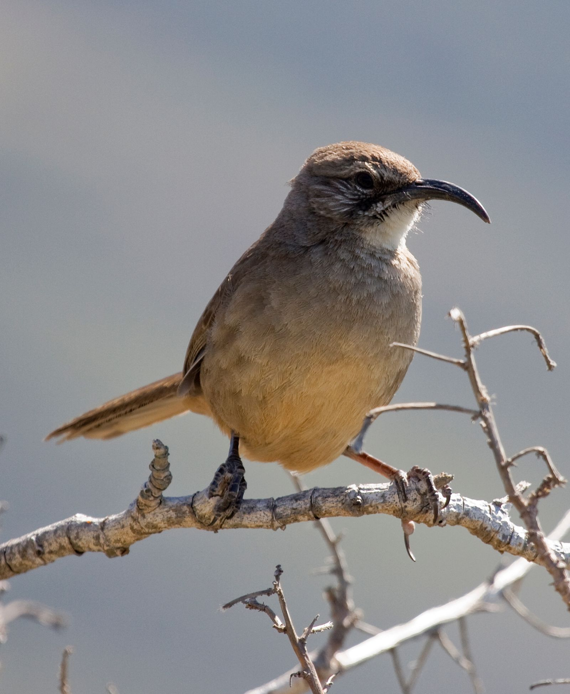
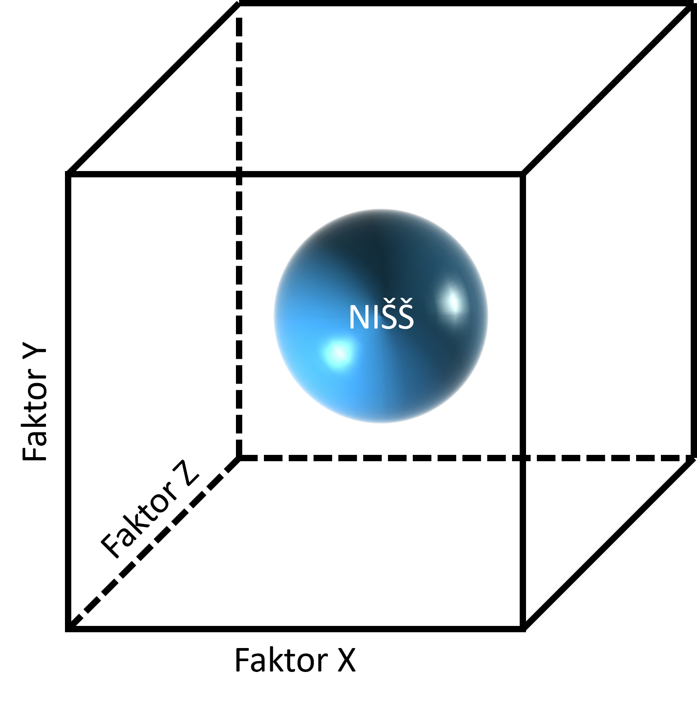
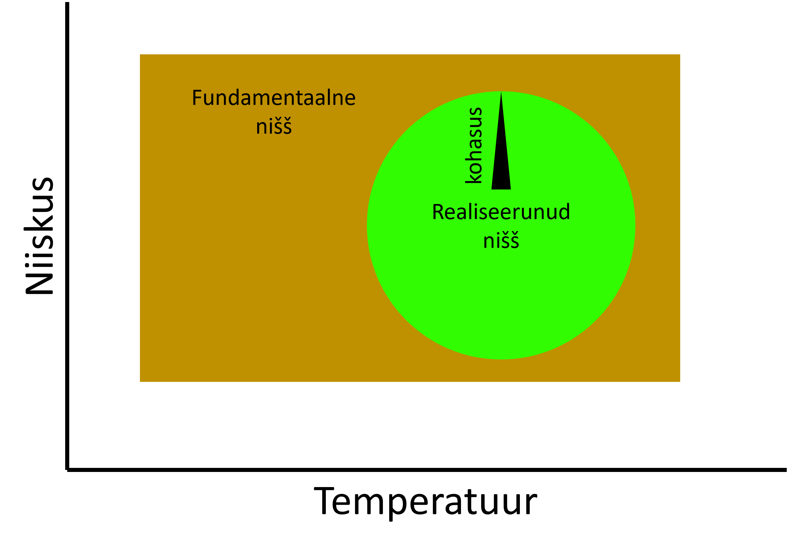
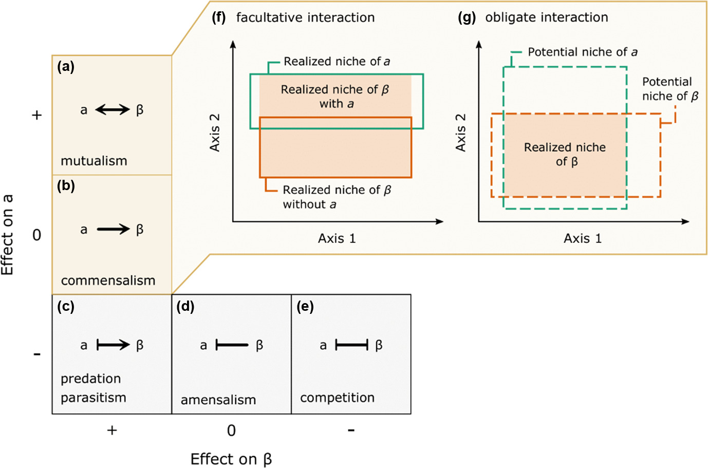
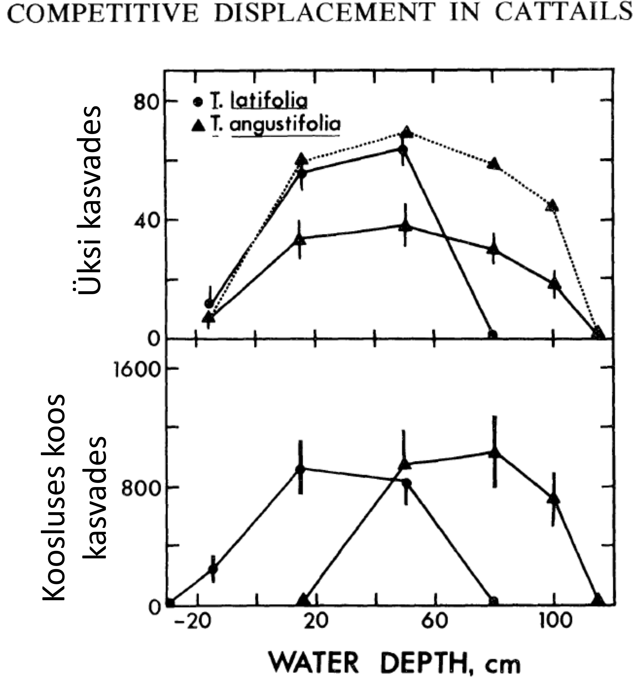
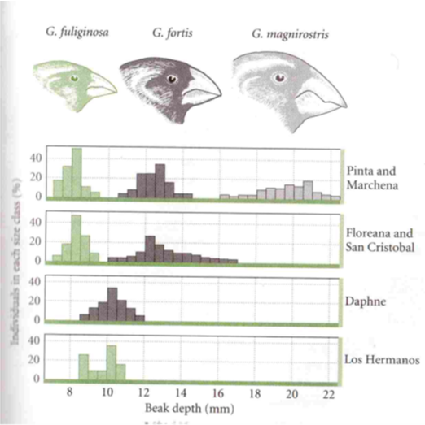
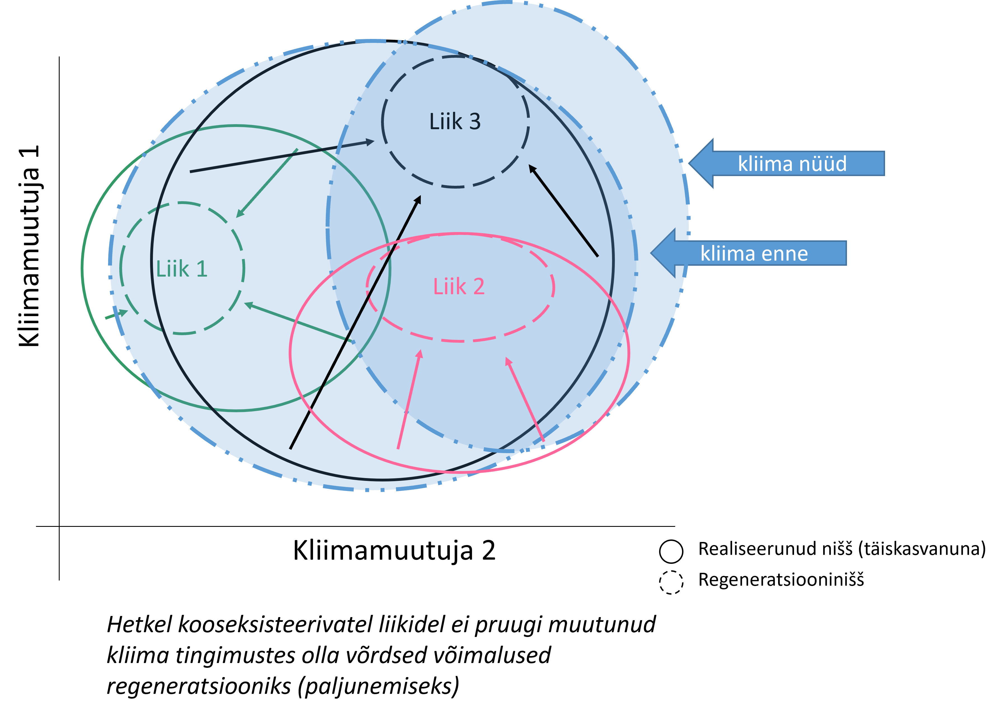

Nišš
nidus (lad.) - pesitsema
Mis on ökoloogiline nišš?
Kui me räägime elurikkusest, ehk tegelikult sellest, miks ja kuidas erinevad liigid samas kasvukohas koos kasvada saavad, ei saa üle eba ümber ökoloogilise niši mõistest. Nimelt on nišš enamike kooseksisteerimise teooriate alusraamistik. Lühidalt öeldes on ökoloogiline nišš liigi erinevate ökoloogiliste amplituudide summa üle kõigi talle oluliste keskkonnagradientide.

Ökoloogilise niši n-ö ülesanne on püüda kooslus struktureerida funktsionaalseteks alaosadeks ja seekaudu üldistada arusaama koosluse ülesehitusest. Nišiteooria aitab vastata näiliselt lihtsale küsimusele: miks elavad liigid just seal, kus nad elavad, ja kuidas on võimalik, et piiratud ressurssidega kasvukohas saab koos eksisteerida suur hulk erinevaid liike?
Niši mõiste areng
Joseph Grinnell ja elupaiganišš (1917, 1927)
Esimesena hakkas niši mõistet süstemaatiliselt kasutama Joseph Grinnell, kes uuris peamiselt linde ning defineeris niši linnuliigi toitumis- ja pesapaigavajaduste ning muude kohastumustena, mis määrasid selle liigi koha koosluses.

Sellist lähenemist nimetataksegi kirjanduses Grinnelli nišks (Grinnelian niche): nišš on abiootiline ehk elupaiganišš (habitat niche) - osa keskkonnast. Nišš oli liigi elutegevuseks vajalike abiootiliste ja biootiliste faktorite kogum.
Charles Elton ja funktsionaalne nišš (1927)
Umbes samaaegselt arendas Charles Elton välja veidi funktsionaalsema lähenemise. Tema jaoks oli nišš (looma)liigi “koht biootilises keskkonnas”, st liigi suhe teiste koosluse liikide suhtes. Seda nimetataksegi nt ka Eltoni nišiks (Eltonian niche) ning see on olemuselt pigem biootiline nišš.
Kui Grinnell keskendus sellele, millise elupaika liik vajab, siis Elton nägi nišši biootiliste ja abiootiliste kohastumuste kompleksina nii kui organismi rolli koosluses (näiteks kohta toiduahelas).
G. Evelyn Hutchinson ja n-mõõtmeline hüperruumn (1944, 1957)
Tänapäevase nišikäsitluse kvantitatiivse raamistiku lõi G. E. Hutchinson:
1944 nišš on kõikide organismi mõjutavate keskkonnafaktorite summa
1957 nišš on hüperkeha, mis asetseb n-mõõtmelises hüperruumis. Selle hüperruumi telgedeks on kõik erinevad keskkonnaparameetrid (nt temperatuur, niiskus, ressursid), mis on liigi elutegevuse jaoks limiteerivad.

Miks see oluline on? Sellepärast, et teoreetiliselt “elab” nišš nüüd eukleidilises ruumis ja selle kallal saab rakendada igasuguseid matemaatilisi vigureid. Nišš ei ole enam abstrakne mõiste, vaid mõõdetav, kvantitatiivne nähtus.
Tegelikult see ruum päris kohe eukleidiline ei ole. Miks? Esiteks sellepärast, et keskkonnaparameetritel ei ole samad ühikud - mis on eukleidiline kaugus 15°C ja 400mm aastase sademete hulga vahel? Teiseks sellepärast, et igasugused gradiendid - ehk teljed ehk n-ruumi mõõtmed - ei ole üksteisest sõltumatud (ehk ortogonaalsed, mis on eukleidilise ruumi eeldus), näiteks on mullasügavus korrelatsioonis mulaniiskusega. Kui me matemaatilisi vigureid siiski rakendada tahame, tuleb telgi transformeerida. Selleks kasutame näiteks ordinatsiooni (komponentanalüüs PCA, NMDS, …), et n-mõõtmeline ruum meile sobivasse vormi suruda.
Fundamentaalne ja realiseerunud nišš
Hutchinson tõi nišiteooriasse veel ühe olulise arenduse. Nimelt jagas ta niši kaheks eri tasemeks:
Fundamentaalne nišš - liigi autökoloogiliste keskkonnapiiride kogum. Fundamentaalne nišš on maksimaalne potentsiaalne keskkonnatingimuste vahemik, kus liik suudaks elada, kui puuduksid biooitilised interaktsioonid.
Realiseerunud nišš - liigi sünökoloogiliste piiride kogum, ehk see osa fundamentaalsest nišist, mille liik tegelikkuses, päris elus, hõivab. Fundamentaalse ja realiseerunud niši erinevus võimaldab hinnata biootiliste interaktsioonide rolli koosluse kujundamisek.
Klassikaliselt peetakse peamiseks fundamentaalse ja realiseerunud niši vaheliste erinevuste põhjustajaks konkurentsi teiste liikidega.

Aga meie teame seda, et samamoodi kujundavad realiseerunud nišši positiivsed liikidevahelised interaktsioonid. Üldiselt paistab nii, et obligaatsed (eriti mutualistlikud) interaktsioonid kipuvad realiseerunud nišši kahandama ning fakultatiivsed positiivsed interaktsioonid võivad realiseerunud nišši võrreldes fundamentaalsega hoopistükkis laiendada (Stephan, Bramon Mora, and Alexander 2021).

Pange tähele, et pildiallkirjas on autorid kasutanud terminit facilitative positiivse mõjuga liikidevaheliste interaktsioonide katusterminina. Meie kursuse mõistes on fasilitatsioon spetsiifilisem termin - kel meelest läinud, vaatab siit.
Niši püsivus
Klassikalise nišiteooria üks põhipostulaate on Gause printsiip ehk konkurentse väljatõrjumise printsiip, mis väidab, et kaks liiki saavad stabiilselt kooseksisteerida ainult juhul, kui nende nišid on piisavalt erinevad.

Et niššidevahelist erinevust tekitada, on võimalik näiteks ka evolutsioneeruda.

Sellise evolutsiooni klassikaliseks näiteks on Darwini sirgud Galapagose saarestikus (Lack 1947). Nimelt sõltub kolme sirguliigi (Geospiza spp.) noka pikkus sõltuvalt sellest, kas liikide areaalid on allo- või sümpatrilised.

Sellise nähtuse nimi on tunnuste lahknemine(character displacement) - sarnaste nõudlustega liikide teatavate tunnuste ecolutsiooniline lahknemine konkurentsi toimel areaalide sümpatrilises piirkonnas. Funktsionaalsete tunnuste lahknemisel muutuvad ka nišid ning teooria järgi väheneb ka konkurents.

Põhimõtteliselt on fundamentaalsed nišid stabiilsed seni kuni liik geneetiliselt ei muutu.
Küll aga võivad nišid muutuda näiteks ontogeneesi käigus - seda nimetatakse regeneratsiooninišiks (Grubb 1977). Regeneratsiooninišš on tingimuste komplekt, mis on vajalik täiskasvanud indiviidi asendumiseks järgmise põlvkonna täiskasvanud invidiidiga. Ühesõnaga tingimused, mis võimaldavad noorjärgu ellujäämise.
